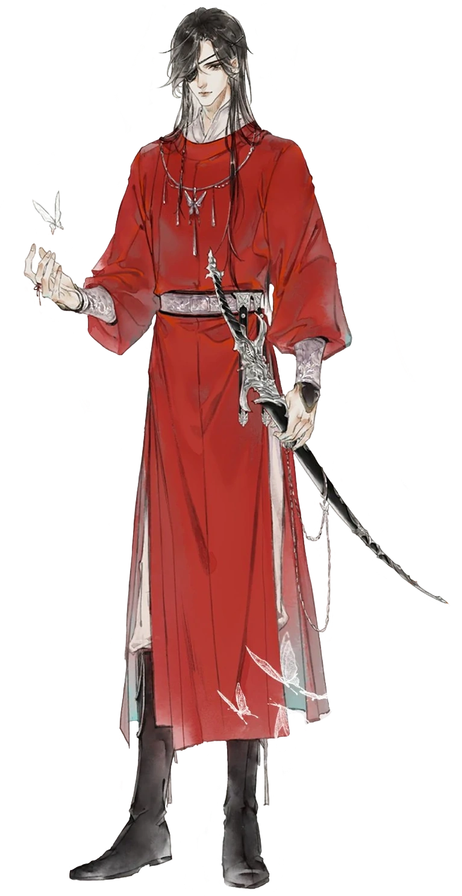
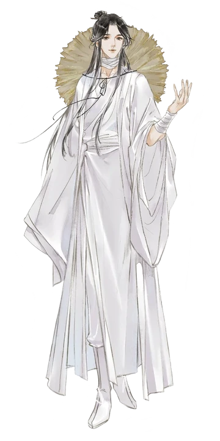

Principal Characters:
Hua Cheng (花城, Huā Chéng)

Hua Cheng (花城, Huā Chéng), also referred to as San Lang (三郎, Sān Láng), is the deuteragonist and main love interest in Heaven Official’s Blessing. He's a ghost of Supreme rank and the most notorious of the Four Great Calamities, widely known as Crimson Rain Sought Flower (血雨探花, Xuè Yǔ Tàn Huā).
Apearance
As a Supreme, Hua Cheng possesses an extremely powerful shape-shifting ability not even gods can see through. It's said that no one has ever seen his true form because he transformed so often. The first time he met Xie Lian after the third ascension, his appearance was about sixteen to seventeen, noted to be good-looking in a boyish, devilish way with eyes bright as the stars. He wore casual, maple-red clothes of high quality and had a loose, carefree ponytail. In his true form, Hua Cheng is a handsome youth of eighteen to nineteen years. The childish aura of his younger form is one of calmness in true form, although there is still a wild playfulness to him. He has skin as white as snow and wears maple-red clothes along with exquisite, silver vambraces. Hua Cheng is also taller than Xie Lian, he has to stretch his neck in order to see him. He has a deep, gentle voice that is pleasant to the ears in his true form. Even in his younger appearance his voice is still deeper than typical for that age. Hua Cheng has Xie Lian's name tattooed on his left forearm, but no one could read it for a long time due to his hopelessly terrible handwriting. As Wuming, he was dressed in black robes and neat warrior attire. He had his hair tied up in a high ponytail and also wore a white smiling mask. As a child and teenager, Hua Cheng wore bandages over the right side of his face at all times, due to being bullied for his appearance. The bandages were in fact covering his right, red eye. Said eye was eventually carved out and now a black eyepatch hides it.
Xie Lian. (谢怜, Xiè Lián)

Xie Lian, His Royal Highness the Crown Prince of Xianle, is the protagonist of Heaven Official’s Blessing. He was widely known throughout the Xianle nation as the beloved yet strange prince. Never showing interest in what was considered normal for a prince, he simply declared, "I want to save the common people!". Through practice, hard work, and insight beyond his years, he perfected his cultivation and ascended to the Heavens at the age of 17. After multiple unfortunate events, he was twice banished from the Heavens. 800 years later, he ascended for the third time.
Apearance
"His golden mask fell off, revealing the young and handsome face previously hidden behind it. In terms of appearance, Xie Lian was considered the peerless beauty of Xianle. His body is described as “smooth and fair like jade” and even though his physical strength is formidable, his body doesn't look "tough". He is a handsome individual who currently wears a conical bamboo hat in honor of a nameless farmer who showed him genuine kindness and compassion at his lowest point in life. He is also dressed in simple, white Taoist robes and bandages to hide his Cursed Shackles. One of the bandages he wears is his weapon, Rouye. In his younger years as a prince, he wore extravagant clothing and also two red pearl earrings, one of which Hua Cheng is currently in possession of. The layers of his God Pleasing Crown Prince robes and the accessories each hold a different meaning as well. The white outer robe symbolizes "divine purity", while the red inner garb symbolizes "canonical tradition". His golden crown stands for royal power and wealth. The white plumes hidden beneath the heart symbolize "flight to ascension" and the loose cordon ribbons along the sleeves symbolize "to carry all lives".
Jun Wu (君吾, Jūn Wú)

Jun Wu (君吾, Jūn Wú) is the Heavenly Emperor who presides over the Heavenly realm, as well as the oldest and most powerful Martial God. He resides in the Great Martial Hall, the number one martial palace in Heaven.[1] Though due to his position, he spends most of his days cultivating or watching over the realms.
Apearance

"That pair of eyes were obsidian black but bright and clear, as if formed by the melted snow of a lake frozen for millions of years." Jun Wu is a poised, solemn youth[3] with an air of dignity. He is usually seen clad in pure white armors, and sits on a throne with the Great Martial Hall behind him and the snowy peak of a mountain under his feet. His features are often described as calm, yet with depth and power behind them.